Background
This function allows user to upload site polygon for Planning Application and Representation Information System (PARIS)
- S12A (Applications for Amendment of Plan)
- S16 S17 (Applications for Planning Permission)
- Representations in respect to draft plan.
- Further Representations in respect to propose amendment plan.
User is also allowed to delete polygon if necessary.
Handling FI cases polygon
The goal is to minimize the duplicated polygons for the same cases no. while maintaining data accuracy.
- For FI cases with unchanged polygons, there is no need to upload them through AGT
 in ArcMap/ArcGIS Pro. This can save time and effort for users to upload or handle duplicated polygons.
in ArcMap/ArcGIS Pro. This can save time and effort for users to upload or handle duplicated polygons. - Users are only required to upload the FI polygon if there are any spatial changes. This includes any modifications to the existing polygon.
Illustration

Upload Procedure
Application Polygon
- Activate the toolbar “AGT – Site Polygon Upl/Del” is opened by clicking “Customize” on the menu bar, then select “toolbars”, then click on “AGT – Site Polygon Upl/Del”.
- On the “AGT – Site Polygon Upl/Del” toolbar, click on “Upload/Delete site polygon” . An “Upload/Delete site polygon to CPDH” window will appear. 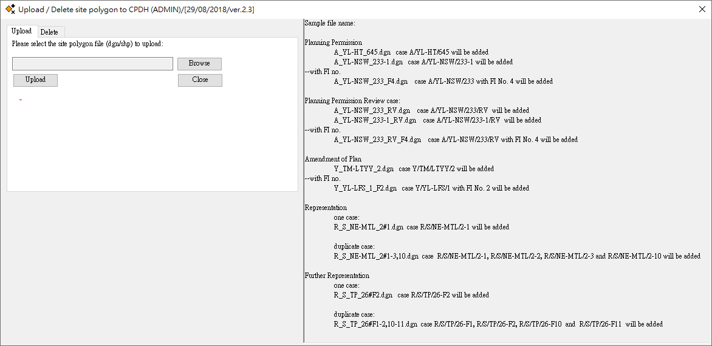
- Click on the “Browse” button and navigate to the polygon that needed to be uploaded. The tool will try to classify the type of cases according to the file name. Therefore, please make sure the file name format is correct.
File Name Result to CPDH Without Further Information Y_TM-LTYY_2.dgn case Y/TM-LTYY/2 will be added With Further Information Y_YL-LFS_1_F2.dgn case Y/YL-LFS/1 with FI No. 2 will be added
File Name Result to CPDH S16 Without Further Information A_YL-HT_645.dgn case A/YL-HT/645 will be added, APP_CASE_CODE = S16 S16 With Further Information A_YL-NSW_233_F4.dgn case A/YL-NSW/233 with FI No. 4 will be added, APP_CASE_CODE = S16 S17 (Review of S16) Without Further Information A_YL-NSW_233_RV.dgn Review case of A/YL-NSW/233 will be added (Review of S16), APP_CASE_CODE = S17S16 A_YL-NSW_249-1_RV.dgn Review case of A/YL-NSW/249-1 will be added (Review of S16A), APP_CASE_CODE = S17S16 S17 (Review of S16) With Further Information A_YL-NSW_233_RV_F4.dgn Review case A/YL-NSW/233 with FI No. 4 will be added, APP_CASE_CODE = S17S16
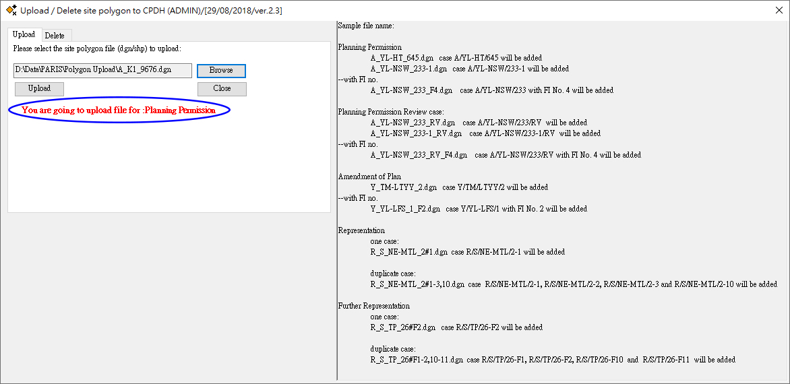
- Click upload and Start the process 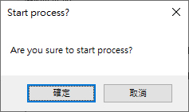
- Once uploaded, the name of the polygon will be shown. 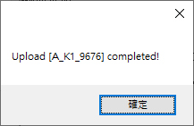
- If the polygon is application case, the tool will return the CA code(s) of the polygon 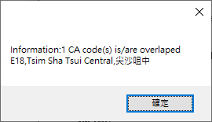
- Open the attribute table and verify the case no, polygon location and shape. 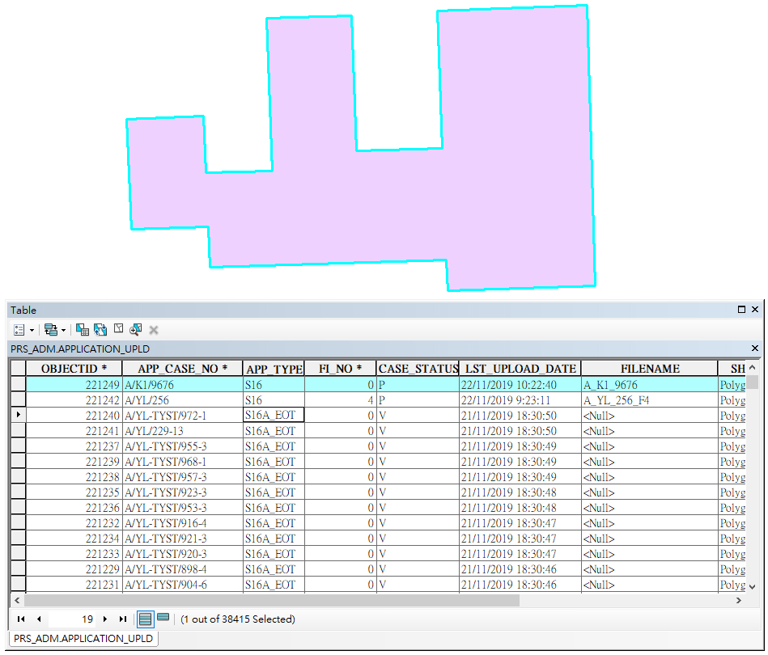
Representation Polygon
- Activate the toolbar “AGT – Site Polygon Upl/Del” is opened by clicking “Customize” on the menu bar, then select “toolbars”, then click on “AGT – Site Polygon Upl/Del”.
- On the “AGT – Site Polygon Upl/Del” toolbar, click on “Upload/Delete site polygon” . An “Upload/Delete site polygon to CPDH” window will appear.
- Click on the “Browse” button and navigate to the polygon that needed to be uploaded.
File Name Result to CPDH For 1 case only R_S_NE-MTL_2#1.dgn Polygon uploaded for Representation No. R/S/NE-MTL/2-1, 1 Polygon for 1 cases For duplicate case R_S_NE-MTL_2#4-9.dgn polygon uploaded for Representation Case No. R/S/NE-MTL/2-4 to R/S/NE-MTL/2-9, 1 polygon for 6 cases R_S_NE-MTL_2#1-3,10.dgn polygon uploaded for Representation Case No. R/S/NE-MTL/2-1, R/S/NE-MTL/2-2, R/S/NE-MTL/2-3 and R/S/NE-MTL/2-10, 1 polygon for 4 cases
File Name Result to CPDH For 1 case only R_S_TP_26#F2.dgn Polygon uploaded for Further Representation No. R/S/TP/26-F2, 1 Polygon for 1 cases For duplicate case R_S_TP_26#F4-9.dgn Polygon uploaded for Further Representation No. R/S/TP/26-F4 to R/S/TP/26-F9, 1 polygon for 6 cases R_S_TP_26#F1,3,10-12.dggn Polygon uploaded for Further Representation No. R/S/TP/26-F1, R/S/TP/26-F3, R/S/TP/26-F10 to R/S/TP/26-F12, 1 polygon for 5 cases - The tool will try to classify the type of cases according to the file name. Therefore, please make sure the file name format is correct.Check the Plan No. and Case No. If the file name is correct, the involed plan no. and the case no will be shown. 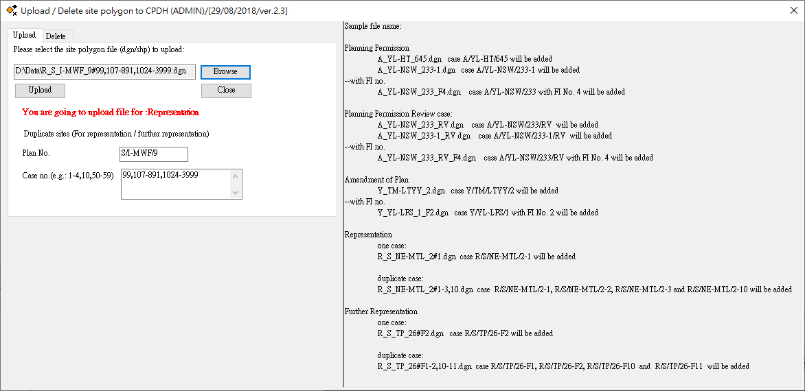
- Click upload and Start the process
- Once uploaded, the name of the polygon will be shown. 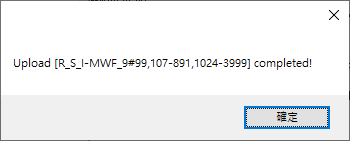
- Open the attribute table and verify the case no, polygon location and shape. 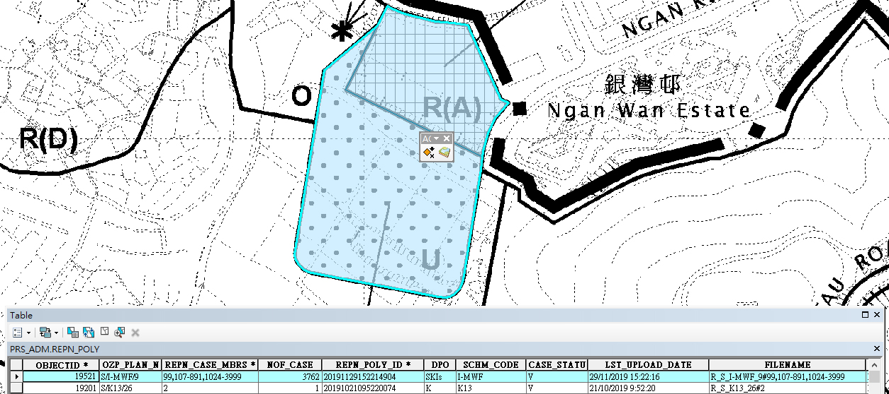
- Click and highlight the record, then click on "Table options > Related Tables", then select “Relate_Repn_Case:PRS_ADM.REPN_POLY”. This will open a related table showing the duplicates. This indicates the duplicates are successfully uploaded. 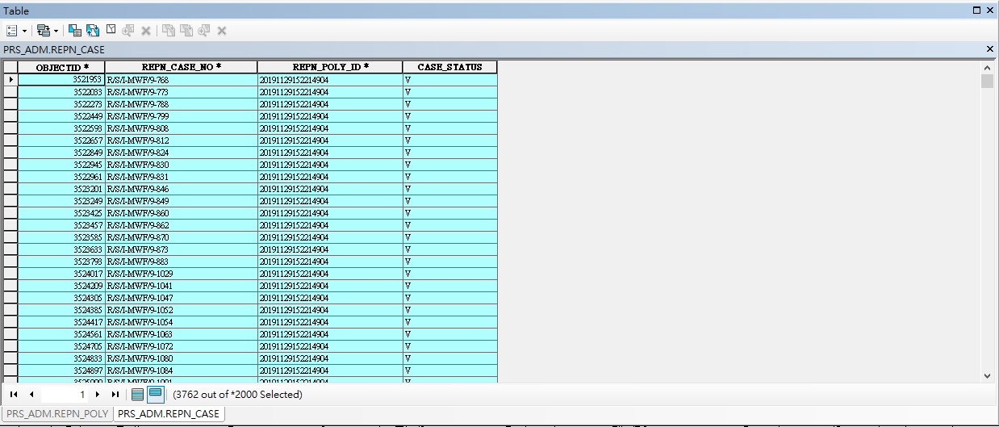
Delete Procedure
- Activate the toolbar “AGT – Site Polygon Upl/Del” is opened by clicking “Customize” on the menu bar, then select “toolbars”, then click on “AGT – Site Polygon Upl/Del”.
- On the “AGT – Site Polygon Upl/Del” toolbar, click on “Upload/Delete site polygon” . An “Upload/Delete site polygon to CPDH” window will appear.
- Click on the “Delete” tab on the top left hand corner.
- Enter the FILENAME of the polygon which you want to delete. 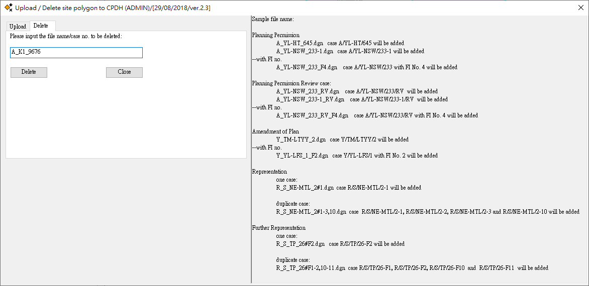
- Click delete and Start the process. 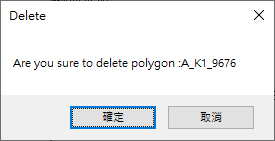
- Delete completed and the FILENAME will be also shown in the message box. 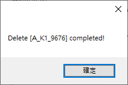
- Check if the record is deleted by opening the “Attribute table”.